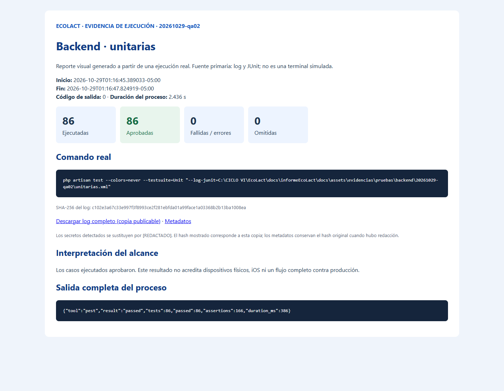
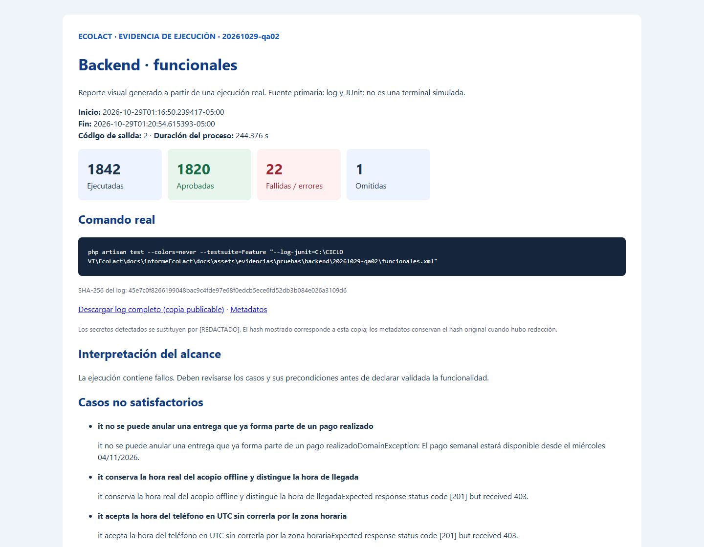
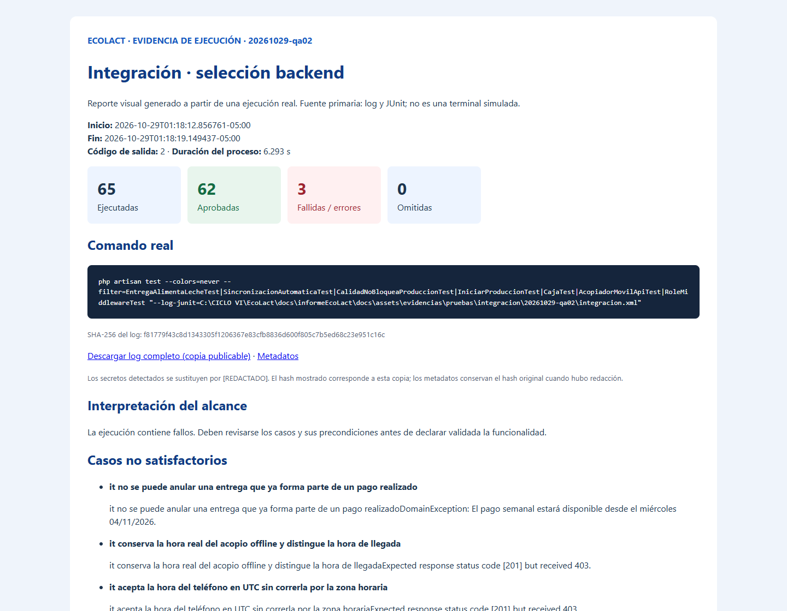

EcoLact / 6. Pruebas / Ejecución verificable
Resultados de la ejecución de pruebas
Este archivo reúne los registros originales, los reportes estructurados y sus capturas visuales. Las imágenes se obtienen automáticamente del HTML generado desde las salidas reales. La fuente primaria es el log completo y el XML JUnit, incluso cuando la captura no muestra todas las líneas.
No ejecutadas fuera del total: 1 caso específico iOS; ejecución nativa de commonTest pendiente; flujo App → API desplegada → MySQL y pruebas de dispositivo sin conteo de casos definido. El caso MySQL descubierto se cuenta solo en “omitidas”, no nuevamente aquí.
Entorno, fecha y revisión
| Dato | Valor comprobado | Fuente |
|---|---|---|
| Fecha y zona | 29/10/2026 · America/Lima (UTC−05:00) | Metadatos ISO de cada comando; logs internos pueden usar UTC |
| Sistema operativo | Windows 11, amd64 | Gradle |
| PHP | 8.3.16; extensiones pdo_sqlite y sqlite3 disponibles | PHP · Extensiones |
| Laravel / Pest / PHPUnit | 13.31.0 / 4.7.8 / 12.5.33 | Composer · Runner |
| Composer | 2.8.8 | Versión |
| Java del lanzador | Temurin 17.0.17; daemon configurado Java 21 Azul | Java · Gradle |
| Gradle | 9.1.0 | Versión |
| Commit base | 75901337489dbe3c61bf5e95357ea365790ab565 | Git |
| Árbol local | Contiene cambios previos; no equivale a un checkout limpio del commit | Estado · Hashes de fuentes |
Registro de comandos
| Ejecución | Inicio real UTC−05:00 | Segundos de proceso | Salida | Registro completo |
|---|---|---|---|---|
| smoke / 20261029-qa01 | 2026-10-29T01:16:12.541006-05:00 | 0.857 | 2 | Log · Metadatos |
| smoke / 20261029-qa02 | 2026-10-29T01:16:23.994391-05:00 | 1.552 | 0 | Log · Metadatos |
| unitarias / 20261029-qa02 | 2026-10-29T01:16:45.389033-05:00 | 2.436 | 0 | Log · Metadatos |
| funcionales / 20261029-qa02 | 2026-10-29T01:16:50.239417-05:00 | 244.376 | 2 | Log · Metadatos |
| mobile-android-host / 20261029-qa02 | 2026-10-29T01:16:26.155711-05:00 | 90.679 | 0 | Log · Metadatos |
| integracion / 20261029-qa02 | 2026-10-29T01:18:12.856761-05:00 | 6.293 | 2 | Log · Metadatos |
El primer intento terminó antes de ejecutar tests por Unknown option --no-interaction; se conservó íntegramente. La opción se retiró y la prueba inicial aprobó. Un código de salida no cero del runner no se transforma en una cantidad ficticia de casos fallidos.
Estadística verificable sin duplicados
| Conjunto | Descubiertas | Ejecutadas | Aprobadas | Fallidas | Errores | Omitidas |
|---|---|---|---|---|---|---|
| unit | 86 | 86 | 86 | 0 | 0 | 0 |
| feature | 1843 | 1842 | 1820 | 6 | 16 | 1 |
| mobile | 93 | 93 | 93 | 0 | 0 | 0 |
| total | 2022 | 2021 | 1999 | 6 | 16 | 1 |
Solo se suman Unit, Feature y Android Host. Los 65 casos de la selección de integración y los 6 del smoke son subconjuntos repetidos y quedan fuera del total. El tiempo de las cards es la suma de tiempos de casos JUnit; la tabla anterior conserva el tiempo real de cada proceso, incluida compilación y arranque.
Resumen JSON · Todos los casos CSV · Todos los casos y errores JSON.
Galería: Backend
Backend: unitarias
2026-10-29T01:16:45.389033-05:00 · salida 0 · 2.436 s de proceso.
php artisan test --colors=never --testsuite=Unit "--log-junit=C:\CICLO VI\EcoLact\docs\informeEcoLact\docs\assets\evidencias\pruebas\backend\20261029-qa02\unitarias.xml"
86 aprobadas · 0 fallidas · 0 errores · 0 omitidas.

Reporte visual generado a partir de una ejecución real. Es una captura del reporte HTML; no es una captura directa de la terminal. La imagen resume; el log conserva toda la salida.
Log completo · Comando, fecha, duración y salida · Reporte HTML completo
Backend: funcionales
2026-10-29T01:16:50.239417-05:00 · salida 2 · 244.376 s de proceso.
php artisan test --colors=never --testsuite=Feature "--log-junit=C:\CICLO VI\EcoLact\docs\informeEcoLact\docs\assets\evidencias\pruebas\backend\20261029-qa02\funcionales.xml"
1820 aprobadas · 6 fallidas · 16 errores · 1 omitidas.

Reporte visual generado a partir de una ejecución real. Es una captura del reporte HTML; no es una captura directa de la terminal. La imagen resume; el log conserva toda la salida.
Log completo · Comando, fecha, duración y salida · Reporte HTML completo
Galería: Móvil
Móvil: Android Host
2026-10-29T01:16:26.155711-05:00 · salida 0 · 90.679 s de proceso.
cmd /c gradlew.bat :shared:testAndroidHostTest --console=plain --rerun-tasks
93 aprobadas · 0 fallidas · 0 errores · 0 omitidas.

Reporte visual generado a partir de una ejecución real. Es una captura del reporte HTML; no es una captura directa de la terminal. La imagen resume; el log conserva toda la salida.
Log completo · Comando, fecha, duración y salida · Reporte HTML completo
Galería: Integración
Integración: flujos seleccionados
2026-10-29T01:18:12.856761-05:00 · salida 2 · 6.293 s de proceso.
php artisan test --colors=never --filter=EntregaAlimentaLecheTest|SincronizacionAutomaticaTest|CalidadNoBloqueaProduccionTest|IniciarProduccionTest|CajaTest|AcopiadorMovilApiTest|RoleMiddlewareTest "--log-junit=C:\CICLO VI\EcoLact\docs\informeEcoLact\docs\assets\evidencias\pruebas\integracion\20261029-qa02\integracion.xml"
62 aprobadas · 2 fallidas · 1 errores · 0 omitidas.

Reporte visual generado a partir de una ejecución real. Es una captura del reporte HTML; no es una captura directa de la terminal. La imagen resume; el log conserva toda la salida.
Log completo · Comando, fecha, duración y salida · Reporte HTML completo
Integridad, privacidad y reproducción
Cada comando tiene inicio, fin, directorio, salida y SHA-256 del log publicable. Los JUnit móviles se copiaron del resultado recién generado por Gradle; no se usaron reportes históricos. El inventario de fuentes identifica el árbol examinado. Una vista fallida incluyó una clave de mapas y tokens de formulario: se sustituyeron por [REDACTADO] en las copias publicables, sin truncar errores ni trazas. Los metadatos distinguen el hash original y el saneado; el registro de redacciones identifica los archivos afectados. Los originales se preservaron fuera de la documentación, en almacenamiento temporal local, y no se enlazan ni se publican. Los nombres y datos de escenarios provienen de fixtures; no se incluyeron archivos .env ni registros de una base real.
Cambios posteriores detectados: al comparar 1.456 fuentes con el inventario inicial, 15 archivos PHP de aplicación/pruebas tenían hashes distintos y fechas de modificación posteriores al cierre de la suite Feature (01:20:54, UTC−05:00). Esta implementación documental no los editó. Se conserva el listado de cambios y fechas y el inventario original; no se actualizaron hashes para ocultar la diferencia. No se atribuyen los resultados de la ejecución anterior a ese código posterior. Para validar la nueva revisión, debe repetirse la selección afectada en un árbol estable y guardarse como otra ejecución.
Las capturas son reportes HTML del navegador, no pantallas de terminal. La herramienta de automatización de escritorio tiene restringida la operación de terminales; los comandos se ejecutaron mediante el shell y se capturó su reporte derivado. No se solicitó captura manual.
Observaciones y limitaciones
- Feature presenta 6 fallos de aserción y 16 errores. La lista completa y sus trazas se conservan en Backend.
- MySQL se omite deliberadamente: no se habilitó una conexión a un servidor existente para probar creación y eliminación de bases.
- Los escenarios basados en
now()pueden depender del día y hora. En esta ejecución hay eventos que cruzan medianoche y un pago anterior a su fecha permitida. - Kotlin produjo advertencias
expect/actual; la tarea host terminó con salida 0. Las advertencias no equivalen a tests omitidos. - No se ejecutaron iOS, dispositivos físicos, servicios remotos reales, concurrencia ni pruebas de carga. No se calculó cobertura porcentual de código.
- Los tests de API se ejecutaron dentro de Laravel; los de sincronización móvil usan respuestas simuladas. No hubo end-to-end contra producción.
Validación de la documentación
mkdocs build --clean terminó con salida 0. Se conservó el aviso informativo global de Material y la página preexistente assets/images/flujos/FUENTES_IMAGENES.md fuera del navbar; no se alteraron las otras secciones. El primer wrapper tuvo un error al imprimir caracteres de consola después de una compilación exitosa; se corrigió la salida UTF-8 del wrapper y se conserva el registro de la compilación.
La revisión automatizada de las cinco páginas a 1440, 768 y 390 px obtuvo 15 vistas sin fallos de carga, enlaces locales, imágenes o desbordamiento global. Se comprobaron las seis pestañas superiores. Las tablas amplias admiten desplazamiento horizontal dentro de su contenedor. El resultado está en el reporte de validación responsive; las capturas de revisión se conservan en validacion-pruebas/20261029-qa02 fuera de los resultados de tests.
Conclusión general de calidad
Se comprobaron satisfactoriamente 1999 casos únicos bajo las condiciones descritas. Se observaron 6 fallos de aserción y 16 errores; 1 casos quedaron omitidos por el runner. La evidencia respalda comportamientos concretos, pero no certifica el sistema completo. Se recomienda revisar las precondiciones temporales de los casos fallidos, resolver las discrepancias restantes, ejecutar iOS en macOS y preparar una integración extremo a extremo sobre infraestructura aislada antes de ampliar las conclusiones.
Consulta la estrategia, el backend, la app móvil, la integración y el archivo de evidencias.